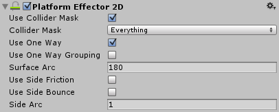

Platform Effector 2D
The Platform Effector 2D applies various "platform" behaviour such as one-way collisions, removal of side-friction/bounce etc.
Colliders that you use with the effector would typically not be set as triggers so that other colliders can collide with it.

Properties
| Property: | Function: |
|---|---|
| Use Collider Mask | Should the 'Collider Mask' property be used? If not then the global collision matrix will be used as is the default for all colliders. |
| Collider Mask | The mask used to select specific layers allowed to interact with the effector. |
| Use One Way | Should one-way collision behaviour be used? |
| Use One Way Grouping | Ensures that all contacts disabled by the one-way behaviour act on all colliders. This is useful when multiple colliders are used on the object passing through the platform and they all need to act together as a group. |
| Surface Arc | The angle of an arc centered on the local 'up' the defines the surface which doesn't allow colliders to pass. Anything outside of this arc is considered for one-way collision. |
| Use Side Friction | Should friction should be used on the platform sides? |
| Use Side Bounce | Should bounce should be used on the platform sides? |
| Side Arc | The angle of an arc that defines the sides of the platform centered on the local 'left' and 'right' of the effector. Any collision normals within this arc are considered for the 'side' behaviours. |